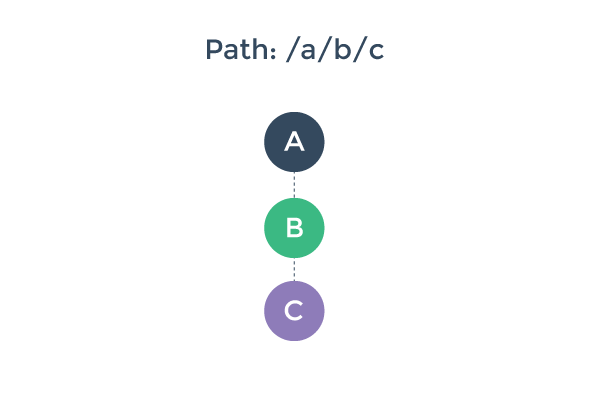
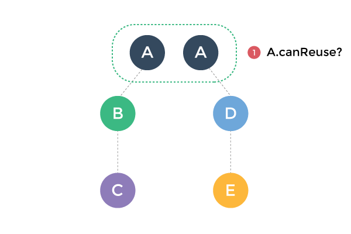
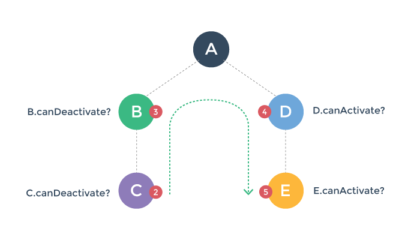

切换控制流水线
为更好的理解路由切换的管道，假设我们一个启用了路由的应用，此应用在路径 /a/b/c 时渲染了三个嵌套的 <router-view> :

接着，用户浏览新路径 /a/d/e ，导致需要更新，渲染一个新的组建树：

如何做到这些呢？这个过程包含一些我们必须要做的工作：
可以重用组件 A ，因为重新渲染后，组件 A 依然保持不变。
需要停用并移除组件 B 和 C 。
启用并激活组件 D 和 E 。
在执行步骤2和3之前，需要确保切换效果有效 - 也就是说，为保证切换中涉及的所有组件都能按照期望的那样被停用/激活。
使用 vue-router ，你可以控制通过实现切换钩子函数来控制这些步骤。但是在了解如何做的细节之前，我们先了解一下大局。
切换的各个阶段
我们可以把路由切换分为三个阶段：
可重用阶段：
检查当前的视图结构中是否存在可以重用的组件。这是通过对比两个新的组件树，找出共用的组件，然后检查它们的可重用性（通过
canReuse选项）。默认情况下， 所有组件都是可重用的，除非是定制过。
验证阶段：
检查当前的组件是否能够停用以及新组件是否可以被激活。这是通过调用路由配置阶段的
canDeactivate和canActivate钩子函数来判断的。
注意，
canDeactivate按照从下至上的冒泡顺序检查，而canActivate则是从上之下。任何一个钩子函数都可以终止界面切换。如果在验证阶段终止了界面切换，路由器会保持当前的应用状态，恢复到前一个路径。
激活阶段：
一旦所有的验证钩子函数都被调用而且没有终止切换，切换就可以认定是合法的。路由器则开始禁用当前组件并启用新组件。

此阶段对应钩子函数的调用顺序和验证阶段相同，其目的是在组件切换真正执行之前提供一个进行清理和准备的机会。界面的更新会等到所有受影响组件的
deactivate和activate钩子函数执行之后才进行。data这个钩子函数会在activate之后被调用，或者当前组件组件可以重用时也会被调用。
接下来我们会谈论一下切换过程中各个钩子函数的细节。